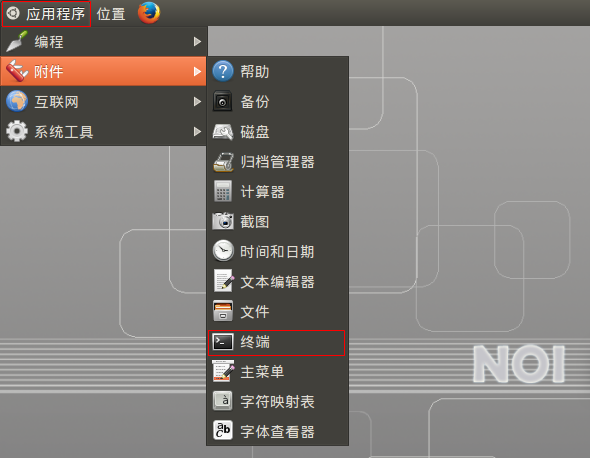
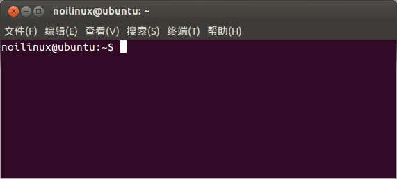
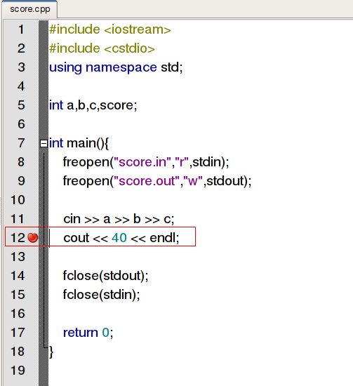
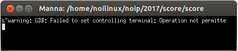
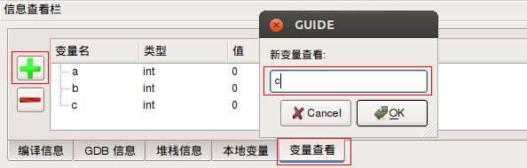
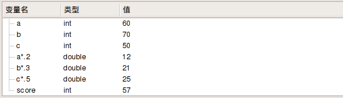

辽宁师范大学 • 张大为@https://daweizh.github.io/noip/
以 NOIP 2017年第23届普及组复赛试题score为例，讲解竞赛解题的基本过程。
建立最小可提交程序框架。
#include <iostream> #include <cstdio> using namespace std; int main(){ freopen("score.in","r",stdin); freopen("score.out","w",stdout); cout << 40 << endl; fclose(stdout); fclose(stdin); return 0; }
40
针对给定的测试用例，只有通过对拍程序得到Ac才能确定所提交代码可以得分。
编写如下对拍程序，命名为 score.sh ，保存到与 score.cpp 相同的 score 文件夹下。
#!/bin/bash i=1 while [ $i -le 10 ] do echo score$i cp -f score$i.in score.in ./score if diff score$i.ans score.out ; then echo Ac fi i=$(($i+1)) done
打开终端窗口

终端窗口如下

在终端窗口键入如下命令并执行上述对拍程序
$ cd ~/noip/2017/score/
$ sh ./score.sh
输出的对拍结果如下
score1 Ac score2 1c1 < 50 --- > 40 score3 1c1 < 10 --- > 40 score4 1c1 < 65 --- > 40 score5 1c1 < 70 --- > 40 score6 1c1 < 55 --- > 40 score7 1c1 < 37 --- > 40 score8 1c1 < 46 --- > 40 score9 1c1 < 56 --- > 40 score10 1c1 < 58 --- > 40
发现上述结果中只有一个Ac，根据该测试点分值，可得10分。
综合分析试题描述对数据建模，找到基本的输入输出数据存储方式，并确定它们的数据类型。
根据试题描述，用a保存作业成绩，用b保存小测成绩，用c保存期末考试成绩，用score保存总成绩。由于需要计算成绩的只有牛牛，确定数据的读入策略为 一次性读入 。
#include <iostream> #include <cstdio> using namespace std; int a,b,c,score; int main(){ freopen("score.in","r",stdin); freopen("score.out","w",stdout); cin >> a >> b >> c; cout << 40 << endl; fclose(stdout); fclose(stdin); return 0; }
按 F7 编译通过上述程序，将输入光标放在cout << 40 << endl;行首，按 F9 键设置断点。

按 F5 键开始调试，出现如下终端窗口

注意：一定在调试结束时关闭该窗口，否则GUIDE不响应任何操作 。在调试状态下，点击 信息查看栏 右下的 变量查看 ，点击按钮依次增加变量 a ，b 和 c ，并观察其 类型 和 值 ，如下图所示。

调试结束后关闭 调试终端窗口 ，按 F9 键去除断点标记。
根据试题中给出的计算总成绩的方法，确定数据加工方法（算法）。
score = a*0.2 + b*0.3 + c*0.5;
其中，20%=2/10=0.2，30%=3/10=0.3，50%=5/10=0.5 ，完整程序如下：
#include <iostream> #include <cstdio> using namespace std; int a,b,c,score; int main(){ freopen("score.in","r",stdin); freopen("score.out","w",stdout); cin >> a >> b >> c; score = a*0.2 + b*0.3 + c*0.5; cout << score << endl; fclose(stdout); fclose(stdin); return 0; }
按 F7 重新编译通过，然后运行对拍程序，观察测试点通过情况。
score1 Ac score2 Ac score3 Ac score4 Ac score5 Ac score6 Ac score7 1c1 < 37 --- > 36 score8 1c1 < 46 --- > 45 score9 1c1 < 56 --- > 55 score10 1c1 < 58 --- > 57
发现后4个测试点并未通过，而且输出结果与答案值相差1。问题出在哪了？再次设置断点，观察a*0.2，b*0.3，c*0.5和score的类型和值。

通过上图发现a*0.2，b*0.3和c*0.5的类型为double，而score的类型是int，这样需要在double和int类型之间进行转换，而且由double向int类型转换时可能存在着精度损失。
既然使用整数和小数的混合计算会发生数据类型转换，那能不能进行全int型计算呢？下面就是一种方法
score = (a*20 + b*30 +c*50) /100;
完整的程序如下
#include <iostream> #include <cstdio> using namespace std; int a,b,c,score; int main(){ freopen("score.in","r",stdin); freopen("score.out","w",stdout); cin >> a >> b >> c; score = (a*20 + b*30 + c*50)/100; cout << score << endl; fclose(stdout); fclose(stdin); return 0; }
再次运行对拍程序，观察结果如下：
score1 Ac score2 Ac score3 Ac score4 Ac score5 Ac score6 Ac score7 Ac score8 Ac score9 Ac score10 Ac
所有测试数据全部通过。
避免数据类型强制转换，可以直接输出计算结果，程序如下
#include <iostream> #include <cstdio> using namespace std; int a,b,c,score; int main(){ freopen("score.in","r",stdin); freopen("score.out","w",stdout); cin >> a >> b >> c; cout << a*.2 + b*.3 + c*.5 << endl; fclose(stdout); fclose(stdin); return 0; }
重新执行对拍程序，结果如下
score1 Ac score2 Ac score3 Ac score4 Ac score5 Ac score6 Ac score7 Ac score8 Ac score9 Ac score10 Ac
为避免类型转换过程中的精度损失，可用double定义总成绩score变量，程序如下：
#include <iostream> #include <cstdio> using namespace std; int a,b,c; double score; int main(){ freopen("score.in","r",stdin); freopen("score.out","w",stdout); cin >> a >> b >> c; score = a*.2 + b*.3 + c*.5; cout << score << endl; fclose(stdout); fclose(stdin); return 0; }
执行对拍程序，结果如下：
score1 Ac score2 Ac score3 Ac score4 Ac score5 Ac score6 Ac score7 Ac score8 Ac score9 Ac score10 Ac